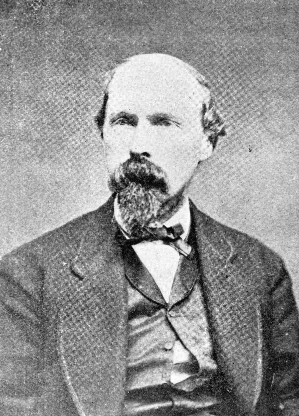

Chapter 5
Samuel Mudd at His Farmhouse
The boarding house had been designed as a hub for escape; it became instead a junction in the pursuit, its every prepared arrangement now readable as evidence of prior intent. Edwin Stanton’s machinery of investigation would process such coordinates with methodical patience, working backward from discovered materials to reconstruct intent. But twelve miles south of Washington, in the cold hour before dawn on Saturday, April 15, 1865, a different calculus was forming. Two riders came down the road from Surratt’s Tavern through Bryantown, Maryland. One of them slumped in his saddle with a left leg that would not bear weight. They had covered nine miles since midnight, and the man in pain was running out of options that did not involve stopping, exposing himself, and trusting to the competence and discretion of strangers.
Dr. Samuel Alexander Mudd was thirty-one years old, a physician and tobacco farmer whose property lay three miles northeast of Bryantown, in the rolling country of Charles County. The Civil War had damaged his business prospects, as it had damaged most things in Southern Maryland: his labor force scattered, his markets disrupted, his sympathies with the Confederate cause no secret among his neighbors. He had met John Wilkes Booth once before, in November 1864, when the actor came to the county on some business Mudd never fully explained at trial. They had talked, drunk together, visited a neighbor. Now, at approximately four in the morning, Mudd heard horses at his gate.
What happened next would be reconstructed from Mudd’s own testimony, from Booth’s diary, and from the later depositions of pursuing cavalry. The reconstruction matters because the interpretation of these hours would determine whether Samuel Mudd lived or died.
—-
Booth could not dismount unaided. Herold, the slight young pharmacist’s assistant who had guided him from Ford’s Theater, helped him down from his horse in the dark farmyard. The fall from the presidential box—Booth’s leap to the stage, his catching of a spur in the bunting—had fractured the fibula of his left leg, though the precise nature of the injury would not be established until Mudd examined it. What was visible was that Booth could not stand without support, that his boot was tight with swelling, and that he needed shelter, medical attention, and time he did not have.
Mudd made a decision. Later he would characterize it as professional obligation: a physician’s duty to treat the injured without inquiring into their circumstances. The record suggests something more complicated: a calculation of risk, a misreading of the situation, perhaps a residue of Confederate sympathy that made the arrival of two armed men at his door seem less alarming than it should have. He brought Booth into the house. He brought him to an upstairs room. And he cut open the actor’s boot.
The boot itself would become evidence. Mudd cut it from the swollen leg, working the leather apart with a knife or shears—the kind of rough field surgery that wartime practice had made familiar. The fracture was of the left tibia, a transverse break above the ankle: painful and disabling but not immediately threatening. Mudd set the bone and applied splints. He also arranged for a carpenter, John Best, to make a pair of crutches for Booth. Booth paid Mudd $25 in greenbacks for his medical treatment. The procedure took time—time in which Herold waited below, time in which Mudd’s wife and children were in the house, time in which the dawn was approaching over Charles County with news of the assassination still traveling faster than the fugitives themselves.
The medical treatment established a documentary trail that would not exist otherwise. A man with a broken left leg, traveling south, requiring assistance to mount and dismount: this was a signature that cavalry could follow. Mudd transformed an anonymous flight into a marked path by treating Booth’s injury and providing shelter for between twelve and fifteen hours—Herold sleeping in a front bedroom on the second floor while Booth rested nearby. The doctor would claim he did not recognize his patient: that Booth introduced himself by a false name; that the circumstances of injury were explained as a fall from a horse; that he provided only medical care and ordinary hospitality to strangers caught out overnight.
—-
The morning advanced. Booth rested in the upstairs room: leg splinted; pistol within reach; Herold moving between patient and farmyard—anxious; conspicuous; unable to sit still—while Mudd went about his Saturday business or pretended to do so until word arrived from Washington by telegraph or horseback reaching even remote parts of Maryland by midday: A presidential assassin was at large; A reward substantial enough to tempt any neighbor would soon be posted; The description would include one detail impossible for any doctor who had just set such an injury to miss—a man with a broken leg.
“Mudd’s response” became “What Mudd did next”
What is documented is that Mudd procured a carriage for the fugitives. He sent to the farm of his father or his neighbor, and a two-wheeled vehicle was brought to his door. Booth, unable to ride, was lifted into this carriage. Herold drove. They left the Mudd farm on Saturday afternoon, heading south toward the Zekiah Swamp and the house of Samuel Cox, a Confederate agent whose name Mudd had provided. The doctor watched them go. Then he attempted to erase the traces of their presence.
He threw the cut boot into the fire. He cleaned the room. He told his wife to say nothing. And he made a decision about what to do with the information he now possessed.
—-
The parallel tracks of this encounter—Booth’s urgent need, Mudd’s professional habit and political sympathy, Herold’s anxious compliance—were already diverging toward different fates. Booth recorded the stop in his diary, a document he would continue to keep and later attempt to destroy. Herold would carry the memory of Mudd’s assistance through twelve days of flight and into the courtroom where both men would be tried. Mudd would spend weeks attempting to reconcile his testimony with the facts that pursuit would uncover: the boot he had burned, the carriage he had provided, the false names he claimed not to have questioned, the directions he had given to Confederate agents.
The military commission that would try the conspirators would not be assembled until May 1. President Johnson ordered its formation nine days after the assassination, following Booth’s death and the roundup of suspects. Representative Frederick Stone of Maryland would serve as Mudd’s senior defense counsel, arguing that the doctor had acted without knowledge of the crime, that his assistance was compelled by medical ethics and personal danger, that the conspiracy charge could not be sustained against a man who had merely treated a wounded stranger. The prosecution, led by Judge Advocate General Joseph Holt, would counter that Mudd’s prior acquaintance with Booth, his failure to report the fugitives, his destruction of evidence, and his provision of material aid constituted knowing participation in the escape.
The verdict would turn on interpretation of the same hours this chapter has traced. Did Mudd recognize Booth? Did he know or suspect the assassination when he treated the injury? Did his assistance extend beyond medical necessity into active conspiracy? The commission found him guilty on all counts, sentencing him to life imprisonment. Four of his co-defendants—Mary Surratt, Lewis Powell, David Herold, and George Atzerodt—would hang on July 7, 1865. Mudd would survive to be pardoned in 1869, to resume his medical practice, to die in 1883 still protesting his innocence.
But that reckoning lay months ahead. On the afternoon of April 15, 1865, what mattered was the immediate consequence of Mudd’s choices: a man with a broken leg, traveling south in a borrowed carriage, leaving behind a farm where a physician had treated him and would now have to decide what to say when the cavalry came.
—-
The cavalry came quickly. By Sunday, April 16, elements of the 16th New York Cavalry were operating in Charles County, following the telegraphic instructions of Colonel Lafayette Baker and the War Department’s expanding dragnet. They found Mudd at his farm. They found the burned boot, or what remained of it. They found that he had provided assistance to two men answering the descriptions of the assassins, that he had known one of them before, that he had sent them toward the Zekiah Swamp with directions to Confederate sympathizers.
The information Mudd provided—or failed to provide—shaped the pursuit. His admission that the fugitives were heading south, that they had a broken leg, that they sought to cross the Potomac into Virginia: this gave the manhunt its first solid geographical fix. Stanton’s apparatus, processing intelligence from dozens of sources, could now weight this report against others, could deploy cavalry to the river crossings, could alert the naval patrols that Booth and Herold would eventually evade through luck and local knowledge.
The doctor’s fate was sealed in these hours, though he would not know it for weeks. Every act of assistance he had rendered became, under the pressure of federal investigation, evidence of prior intent. The boot he had cut away, the splints he had applied, the carriage he had procured, the directions he had given: these concrete details would be arrayed against him in a military courtroom, stripped of context, presented as elements of a conspiracy that may or may not have existed in Mudd’s mind when he opened his door at four in the morning.
The larger pattern was becoming visible. Booth’s escape was generating a documentary record that would outlast him. Every person who helped him, every farm where he stopped, every name he mentioned to those who sheltered him: these became nodes in a network that federal investigators could map and prosecute. The Confederate underground, already fragmenting after Appomattox, could not absorb this pressure. The willingness to risk aid—the measure of active Confederate sympathy against personal survival—was being tested at every point of contact. Mudd had tested it and found his own limit: he would treat the wounded man, but he would not ride with him; he would provide directions, but he would not guide him; he would delay his report, but he would not ultimately refuse to speak.
This was not the behavior of a committed conspirator. It was the behavior of a man caught between incompatible obligations, making choices that satisfied none of them. The military commission would read it as guilt. Later interpreters would read it as something closer to tragedy: a physician’s professional ethic, a Southerner’s residual sympathy, a citizen’s late apprehension of national crime, all colliding in a farmhouse kitchen at dawn on the day after Lincoln died.
—-
Booth and Herold pressed south. The carriage Mudd had provided carried them only as far as the edge of the Zekiah Swamp, where the roads failed and the horses could not continue. They abandoned it and continued on horseback, Booth riding with his splinted leg extended, Herold leading when necessary. They reached the house of Samuel Cox on Saturday evening, were hidden in a pine thicket for days while Cox arranged their passage across the Potomac, and would not successfully reach Virginia until April 22—seven days after the assassination, five days after Mudd’s door had closed behind them.

The delay was costly. The manhunt, fed by Mudd’s description and the accumulating reports of other contacts, was tightening around the river. Every hour Booth spent in Maryland increased the probability of capture. Every person who saw him, who helped him, who knew of his presence and did not report it: these became liabilities for themselves and potential informants for the pursuit. The Confederate network that had been designed for kidnapping, for secret communication, for moving men and materiel across the Potomac: this network was not designed to hide a man who had killed the President, whose description was known to every soldier and many civilians, whose injury made him unmistakable.
Mudd had contributed to this delay. By providing medical treatment, he had enabled Booth to continue. By providing a carriage, he had extended the range of flight. By providing directions to Cox, he had connected the fugitives to the only remaining Confederate infrastructure in the region. These contributions were real, whatever their motivation. They were also, in the calculus of the manhunt, sources of intelligence. The cavalry that questioned Mudd on Sunday learned where Booth was heading. The telegraph carried this information to Washington. The net descended on the Zekiah Swamp with a precision that would eventually, inevitably, close.
—-
The doctor’s own story continued in parallel. Arrested on April 26, the day of Booth’s death, he was transported to Washington and confined in the Old Capitol Prison. His trial began on May 10, lasted seven weeks, and heard testimony from 366 witnesses. The prosecution constructed its case from the material traces of assistance: the burned boot, the borrowed carriage, the directions to Cox, the prior meeting with Booth. The defense attempted to reconstruct the psychology of the farmhouse encounter: the darkness, the urgency, the professional obligation, the limited information. The commission was not persuaded. On June 30, Mudd was convicted of conspiracy to murder the President. On July 7, he watched from his cell window as four of his co-defendants were hanged.
He would serve four years at Fort Jefferson in the Dry Tortugas, Florida, before his sentence was commuted. He would return to Maryland, resume his medical practice, die in 1883 at the age of forty-nine. His descendants and advocates would spend more than a century arguing for his exoneration, for a presidential pardon that would acknowledge the ambiguity of his case. The argument would turn on the same questions that this chapter has traced: what did he know, when did he know it, what did he intend by his assistance.
The record does not permit certainty. What it permits is the tracing of consequence: how a single predawn encounter, lasting no more than twelve hours, transformed three lives and shaped the geometry of pursuit. Booth received the medical care that enabled his continued flight. Herold acquired a guide to the next stage of escape. Mudd acquired—unwillingly, perhaps unknowingly—a role in the conspiracy that would define his historical existence.
The concrete evidence Mudd produced was specific and actionable. A man with a broken left leg, traveling south toward the Potomac, seeking to cross into Virginia: this description traveled by telegraph to every military station in southern Maryland. It reached the cavalry detachments under Lieutenant Edward P. Doherty and Lieutenant Colonel Everton Conger. It reached the naval vessels patrolling the river. It reached the civilian population in the form of reward notices that would eventually, through the agency of Willie Jett and the Garrett family, deliver Booth to his death.
Dr. Mudd’s actions had produced a precise geographical and physical clue, handing off this actionable intelligence to Stanton’s military apparatus.